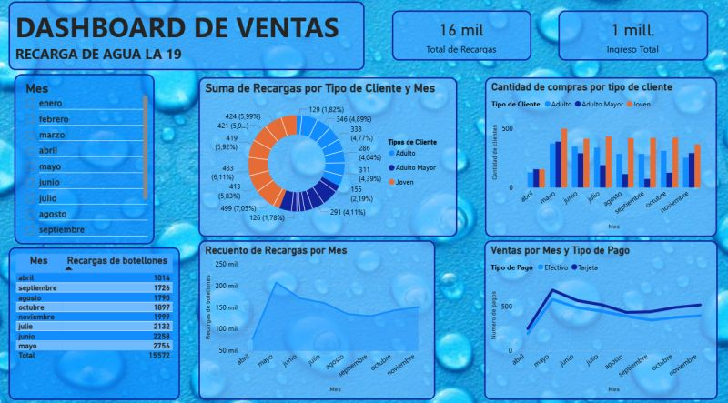
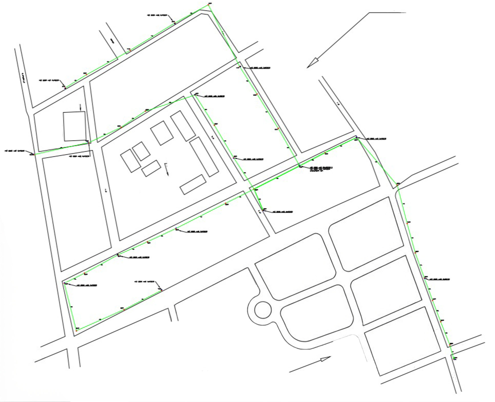
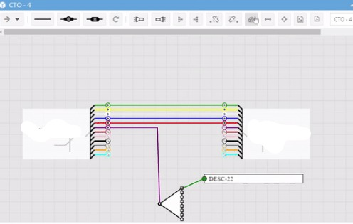
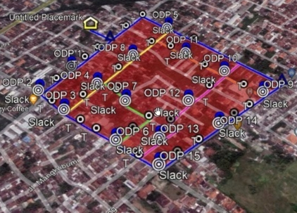
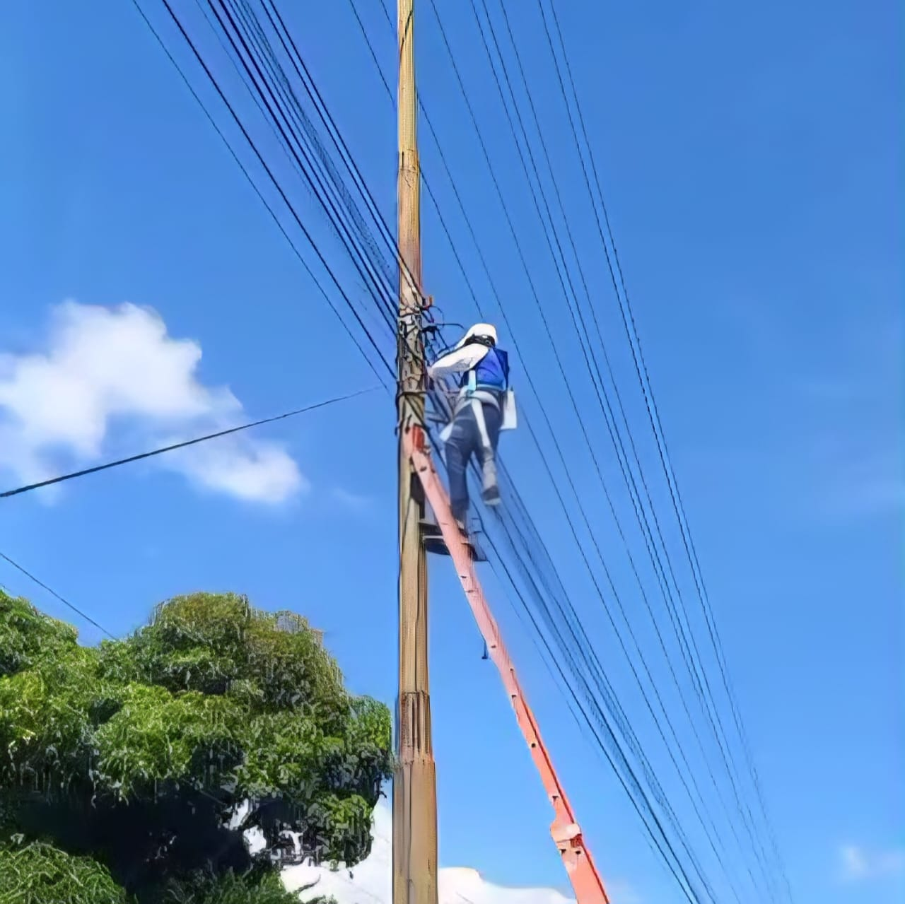
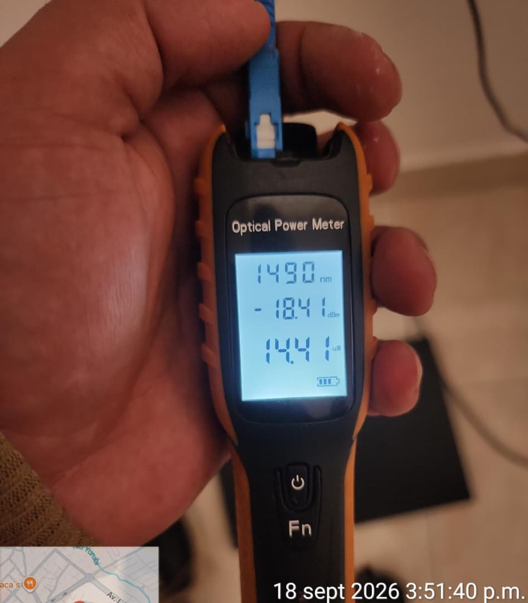
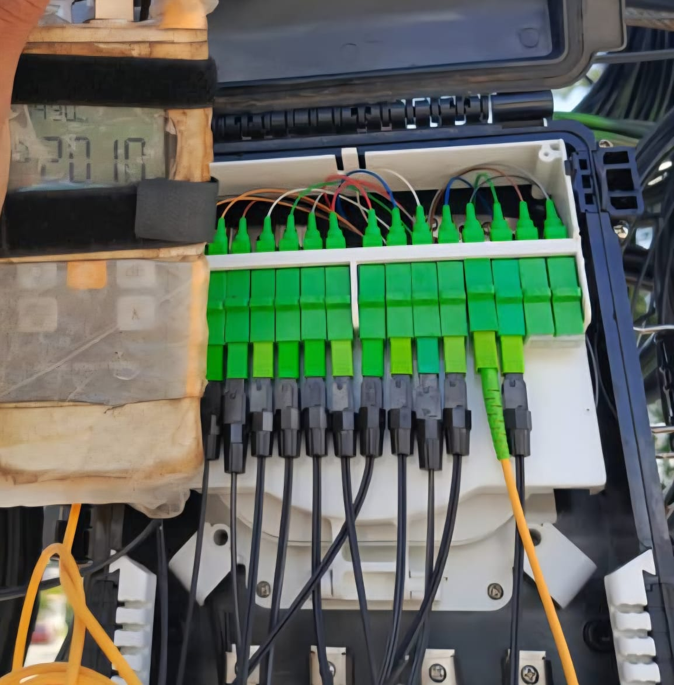
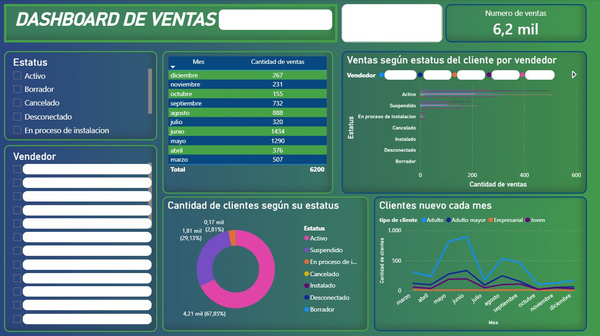
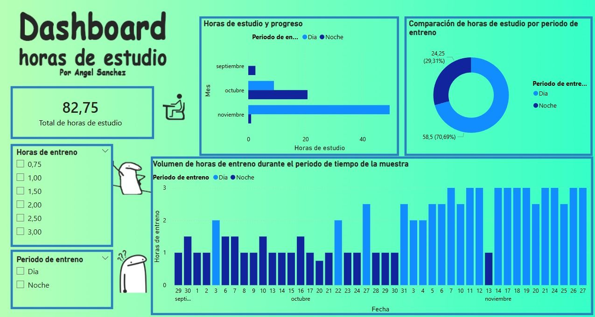

Este proyecto representa una transformación digital del negocio, donde la toma de decisiones dejó de basarse en intuiciones para sustentarse en indicadores precisos de comportamiento del cliente y ventas.
Ver en LinkedInTécnico de redes FTTH y analista de datos
Diseño y documento redes de fibra óptica, y convierto los datos de ventas en decisiones. Tengo 22 años y trabajo desde San Felipe, Yaracuy.
Me apasionan la tecnología y la resolución creativa de problemas. He participado en proyectos de gran escala para el diseño de redes FTTH y tengo experiencia sólida como analista de datos, lo que me permite combinar precisión técnica con visión estratégica.
Lidero con empatía y alta inteligencia emocional, y uso esas cualidades para proponer ideas innovadoras y fomentar entornos colaborativos. Estoy en constante evolución: siempre dispuesto a aprender nuevas herramientas y aplicarlas con excelencia para generar resultados de alto valor.
Tres puestos en Thundernet C.A., donde demostré liderazgo y propuse ideas nuevas.
Solución de fallas de FTTH y de redes directamente en campo.
Procesamiento y validación de las ventas de servicio.
Registro de las operaciones diarias sobre la red FTTH.
Identifiqué unos 500 clientes que disfrutaban del servicio estando morosos. Encontré el problema en las politicas de BQN y propuse un nuevo código para el corte de clientes.






Proyectos que destacan por los resultados de las acciones tomadas a partir del análisis.
30%
Con las propuestas del análisis se recuperó el 30% de las ventas.
Propuestas creativas para aumentar las ventas y mantener a los clientes.
Análisis de mi propio tiempo para optimizar y mejorar las horas de estudio.

Este proyecto representa una transformación digital del negocio, donde la toma de decisiones dejó de basarse en intuiciones para sustentarse en indicadores precisos de comportamiento del cliente y ventas.
Ver en LinkedIn
Diseñé e implementé un dashboard integral de ventas y clientes con el objetivo de democratizar el acceso a la información y fomentar una cultura data-driven (guiada por datos) en la toma de decisiones estratégicas, sustituyendo los enfoques intuitivos por respaldos empíricos. Asimismo, aporté propuestas de valor para la captación y fidelización de clientes alineadas al modelo de negocio de la empresa.
Ver en LinkedIn
Este análisis de 44 días respaldado por un registro diario de mis entrenamientos y horas de estudio en Python demuestra que cambiar el entrenamiento a las 5:00 a.m. optimiza notablemente tu rendimiento y calidad de vida.
Ver en LinkedInCapacítate para el empleo, Fundación Mendoza
Capacítate para el empleo, Fundación Mendoza
Otro curso: Diseño web adaptable, 2022 (freeCodeCamp)
Si tienes un proyecto de redes de fibra óptica o de análisis de datos, escríbeme.